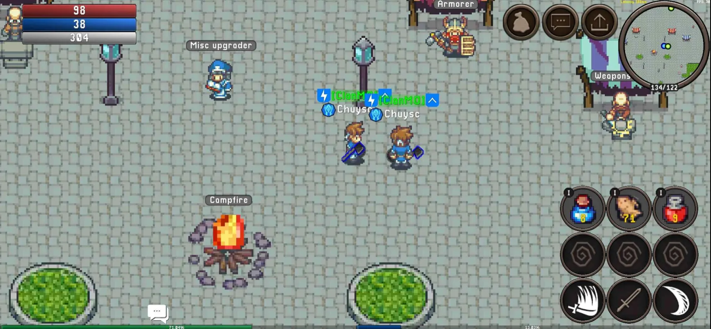
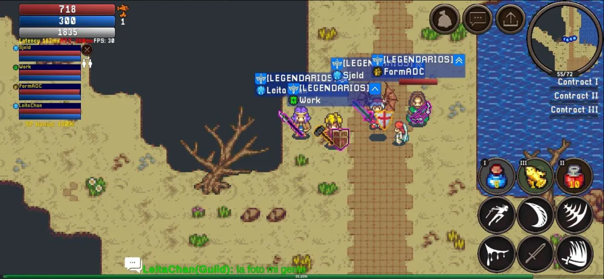
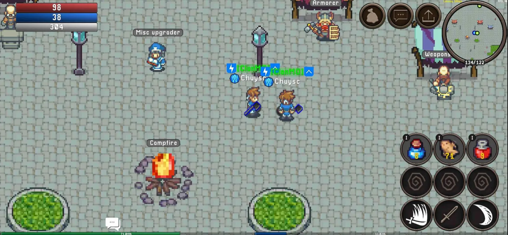
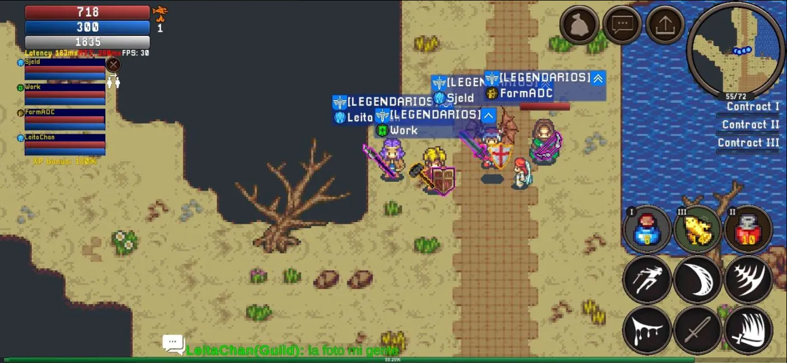

Reunion Online – O Caminho para a Glória!
Reunion Online é um MMORPG 2D de mundo aberto, inspirado no clássico Mu Online, onde dedicação e estratégia definem os verdadeiros campeões. Com um sistema dinâmico e interativo, os NPCs agem como jogadores reais, tornando cada batalha e decisão únicas.
🏹 Explore um vasto mundo – Viaje por terras desconhecidas, enfrente monstros lendários. Aventure-se em masmorras e florestas sombrias, mas lembre-se: a glória é para os corajosos!
Descubra o Mundo de Reunion Online!
🪓 Forje suas armas – Combine diferentes equipamentos e descubra criações inéditas. Já pensou em transformar uma lança em um guarda-chuva letal? No Reunion, o limite é a sua imaginação!
Crie Sua Própria Lenda.
🏆 Participe de torneios épicos e lute pelo topo do Rank dos Heróis. Os vencedores levam a Taça da Glória e entram para a história!
Conquiste a Glória
🥇 O campeão supremo será eternizado com uma estátua no centro da cidade, sendo lembrado para sempre como uma lenda do Reunion Online.
O melhor entre os melhores
Galeria
Veja imagens exclusivas do Reunion Online
 



Heróis
Escolha o seu HERÓI.
-
KNIGHT
-
RANGER
-
WIZARD
-
PALADIN
STAFF
Infomarções sobre a Equipe.
Sobre Nós
Por trás do Reunion Online está uma equipe verdadeiramente apaixonada por MMORPGs! Desde a infância, vivemos a nostalgia e a magia de clássicos como Mu Online, sonhando em criar nosso próprio universo onde cada jogador pudesse viver aventuras épicas.
Esse sonho de criança se transformou em missão: desenvolver um MMORPG 2D inovador, feito com dedicação, carinho e atenção aos detalhes. Reunion Online nasceu para proporcionar aquela sensação única de descoberta, competição e comunidade que tanto marcou nossa juventude.
Aqui, cada jogador tem a chance de escrever sua própria história e conquistar seu lugar entre os melhores. Reunion Online não é apenas um jogo – é a realização de um sonho e um convite para você fazer parte dessa aventura. Pronto para embarcar com a gente?